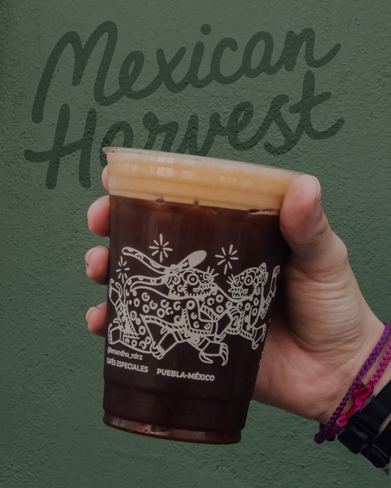
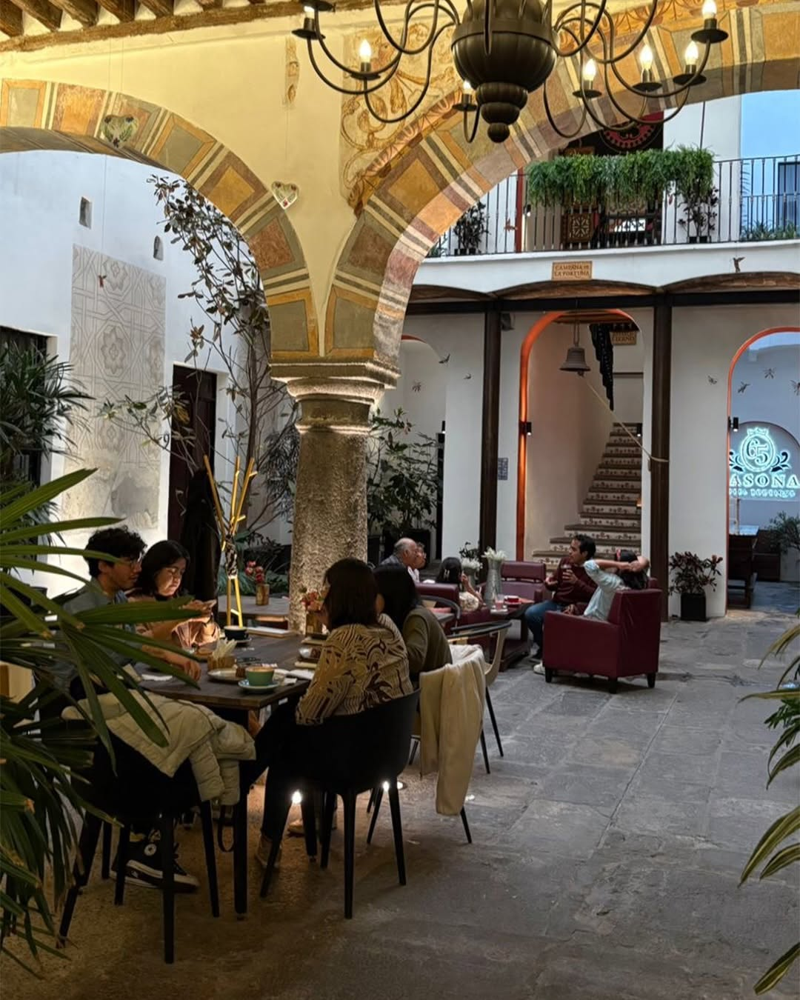
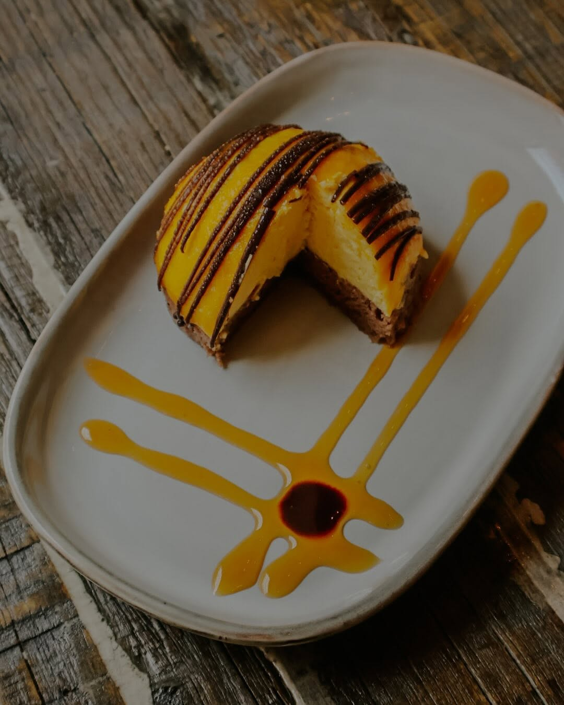
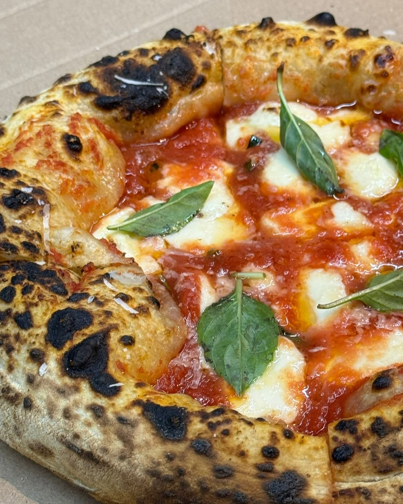

V60
Goteo con control de flujo y temperatura. Filtro de papel: taza limpia, sin sedimentos.
Acidez brillante · notas floralesLunes a domingo · 8:00 am — 10:30 pm · Top 50 The Best Coffee Shops México 2025
Top 50 de México · 2025
Tostamos y servimos para México y el mundo los mejores granos mexicanos. Café de especialidad, brunch y panadería artesanal en el corazón de Puebla.
4
Barras en Puebla
Top 50
Coffee Shops México
100%
Grano mexicano

Nuestra historia
Mexican Harvest nació con una idea sencilla: que el mejor café mexicano se quede en México. Trabajamos directo con productores de Puebla, Oaxaca, Chiapas y Veracruz, tostamos cada cosecha en casa y la servimos en barras donde el tiempo se toma con calma.
Gracias a nuestros productores y clientes, hoy somos parte del Top 50 de The Best Coffee Shops México. Porque son amistad, equipo… parte del corazón de Mexican Harvest.
Conoce nuestra filosofíaCafé de especialidad
El café no nos hace especiales; las personas sí. Esto es lo que encuentras en cualquiera de nuestras barras.
Microlotes de Puebla, Oaxaca, Chiapas y Veracruz, comprados directo al productor.
Perfilamos cada cosecha en lotes pequeños y fechamos cada bolsa.
V60, origami, chemex, prensa y aeropress; el barista te recomienda según la cosecha.

Maceración en frío de 18 a 24 horas y draft con nitrógeno, todos los días.
Pan dulce y salado horneado a diario por nuestra panadería hermana.
Sede oficial: sella tu pasaporte en cualquiera de nuestras cuatro barras.
Barra de métodos
Cada método revela algo distinto del mismo grano. Nuestros baristas te acompañan para encontrar tu taza.
Goteo con control de flujo y temperatura. Filtro de papel: taza limpia, sin sedimentos.
Acidez brillante · notas floralesFiltrado grueso y vertido pausado. Una taza elegante, pensada para compartir la jarra.
Taza limpia · dulzor delicadoPresión suave e inmersión corta. Cuerpo redondo y dulzor alto en pocos minutos.
Cuerpo redondo · dulzor altoMaceración en frío de 18 a 24 horas con nitrógeno en draft. Un café frío, brillante y espumoso.
Sabor vibrante · stout ligeraLos favoritos de la barra

Desde $68Coldbrew en mano y tu día mejora. Maceración lenta, dulzor excepcional.
 Desde $42
Desde $42
En la tolva
Black honey láctico: chocolate, mantequilla, manzana y toronja.

L–D · 8:00 a 14:00
Horneado del díaGalería
Testimonios
★★★★★
“El mejor café de especialidad de Puebla. El nitro brew es una experiencia que no encuentras en otro lado.”
Mariana G. · Puebla
★★★★★
“Los chilaquiles del brunch y un V60 de Oaxaca: no hay mejor plan de domingo en el Centro Histórico.”
Rodrigo T. · CDMX
★★★★★
“Se nota el cariño por el grano mexicano. Los baristas te explican cada cosecha como si te contaran un cuento.”
Sofía L. · Tehuacán

Eventos y comunidad
Colaboramos con amigos productores, panaderos y pizzeros de la región: tardes de pizza y café, catas de cosechas nuevas y la Ruta del Café Puebla. Trae tu pasaporte, sella tu visita y gana premios de la casa.
Cosechas en la tolva, eventos y promociones. Sin spam: solo café.
Visítanos
Lunes a domingo · 8:00 am — 10:30 pm
Toca una sucursal para verla en el mapa.
@mexican.harvest


{kind=link}
{kind=link}
{kind=link}
{kind=link}